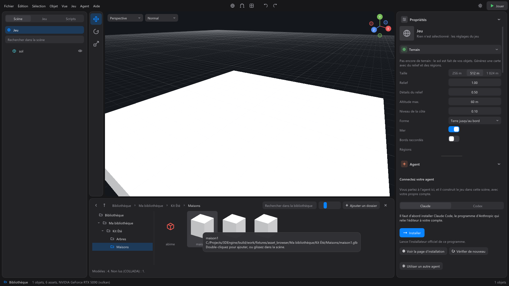

La bibliothèque¶
En bas de la fenêtre, sous la vue 3D : vos modèles et vos sons, rangés comme dans l'explorateur Windows. Elle s'ouvre et se ferme par Bibliothèque, en bas à gauche de la barre d'état, ou par Vue > Bibliothèque. Glissez son bord du haut pour changer sa hauteur.

Ajouter vos dossiers¶
L'éditeur ne livre pas de modèles : vous ajoutez les dossiers où sont les vôtres.
- Ajouter un dossier, puis Parcourir pour le choisir, ou collez son chemin dans le champ (« Chemin d'un dossier, ou déposez-le ici »).
- Ou glissez un dossier (ou un fichier) depuis l'explorateur Windows sur la fenêtre de l'éditeur : son dossier est ajouté.
- Ou écrivez le chemin d'un dossier dans un message à l'agent : il est ajouté à la bibliothèque.
Les dossiers ajoutés valent pour tous vos projets. La croix au bout de la ligne d'un dossier, dans l'arbre, le retire de la bibliothèque (rien n'est effacé du disque).
Formats lus : les modèles .glb, .gltf, .fbx et .obj, avec leurs squelettes et leurs animations ; les sons WAV, MP3, OGG et FLAC. Les fichiers COLLADA (.dae) sont comptés à part (« Non lus (COLLADA) ») : l'éditeur ne les lit pas encore. Un même modèle livré en plusieurs formats n'apparaît qu'une fois.
Parcourir¶
- À gauche, l'arbre : Bibliothèque, puis vos dossiers et leurs sous-dossiers ; Systèmes (les systèmes activés) et Objets réutilisables, quand il y en a. Un clic ouvre un dossier.
- En haut, le chemin : chaque nom est cliquable. Les flèches Précédent et Dossier parent sont à gauche, comme dans l'explorateur.
- Rechercher dans la bibliothèque cherche dans le dossier ouvert et ses sous-dossiers.
- Le curseur à côté de la recherche règle la taille des aperçus (aussi Ctrl + molette sur la grille).
- La croix à droite ferme la bibliothèque.
- En bas, le nombre de modèles et de sons du dossier.
Au survol, un modèle montre son nom et son chemin.
Utiliser un modèle¶
- Double-clic : ajoute le modèle au centre de la vue.
- Glisser dans la vue 3D : le pose là où vous le lâchez.
- Glisser sur la zone Végétation d'une région du terrain : il y pousse. Voir Le terrain.
- Clic droit : Poser dans la scène, Ouvrir l'emplacement du fichier, Copier le chemin.
Quand un modèle sert dans un projet, son fichier y est copié : le projet reste complet si on le déplace, et votre bibliothèque ne change jamais.
Les sons¶
- Double-clic : écoute le son ; un second double-clic l'arrête.
- Clic droit : Écouter (ou Arrêter), Ouvrir l'emplacement du fichier, Copier le chemin.
Les sons servent aux systèmes (le système Sons) et aux scripts.
Les dossiers¶
Clic droit sur un dossier de la grille : Ouvrir, Ouvrir dans l'explorateur Windows. Au survol, il dit combien de modèles et de sons il contient.
Systèmes¶
Le dossier Systèmes montre les systèmes activés qui se posent sur des objets, avec le nombre d'objets qui les portent. Glissez-en un sur un objet ou un dossier, dans la liste de la scène ou dans la vue ; un double-clic le pose sur la sélection. Voir L'onglet Jeu.
Objets réutilisables¶
Un objet réutilisable est un ensemble d'objets (une maison, un étal, un lampadaire) qu'on pose autant de fois qu'on veut, et dont toutes les copies changent ensemble.
- Le créer : clic droit sur un objet de la scène, Faire un objet réutilisable (ou menu Objet). Il apparaît dans le dossier Objets réutilisables.
- Le poser : double-clic, glisser dans la vue, ou clic droit > Poser dans la scène.
- Le supprimer : clic droit > Supprimer.
Une copie se règle dans ses propriétés : appliquer ses changements à toutes les copies, les annuler, ou la détacher.
En ligne¶
Le dossier En ligne, en bas de l'arbre, propose des modèles gratuits à télécharger dans votre projet, avec leur licence.
Choisir d'où ils viennent. Au départ, aucune source n'est choisie et l'éditeur ne contacte aucun site. Le bouton Sources en propose deux sortes :
- Poly Haven : des modèles 3D gratuits de polyhaven.com, dans le domaine public (CC0). La mention « Powered by Poly Haven » reste affichée sous leurs aperçus, comme le demande leur site.
- Adresse d'une bibliothèque : un index au format de WorldMint. Pour essayer sans Internet,
python tools/bibliotheque_demo.py <dossier> --licence CC0-1.0sert un dossier de vos modèles sur cet ordinateur et affiche l'adresse à coller ici.
Rien de vous ne part : ni vos fichiers, ni vos recherches. Le catalogue d'une source est lu en entier, et la recherche se fait sur votre ordinateur.
Parcourir et chercher. La grille montre les modèles des sources choisies, avec leur aperçu et leur licence (CC0 ou CC BY) en haut à droite. Rechercher dans la bibliothèque cherche dans leur nom, leur auteur et leurs étiquettes. Au survol : l'auteur, la licence, la source et la taille. En bas, le modèle choisi et sa licence. Actualiser relit les catalogues.
Ajouter un modèle. Double-cliquez dessus : il est téléchargé dans le projet, puis posé au centre de la vue (le pourcentage s'affiche sur sa tuile pendant le téléchargement). Clic droit : Poser dans la scène, Ajouter au projet (sans le poser), Ouvrir la page de l'asset. Il arrive dans assets/<source>/<modèle>/, avec un fichier LICENCE.txt qui dit son auteur, sa source et sa licence. Un modèle déjà téléchargé ne l'est pas deux fois.
Ce qui est vérifié. Tout fichier venu d'Internet est traité comme une donnée qui peut être piégée : sa taille est bornée pendant le téléchargement, son empreinte doit correspondre, seuls les formats de modèles, d'images et de textes sont acceptés (jamais un programme ou un script), une archive est dépliée dans des limites strictes, et le modèle est lu par l'éditeur avant d'entrer dans le projet. Un asset sans licence acceptée (CC0 ou CC BY) n'est pas proposé. Ce qui est refusé l'est avec la raison, et ne laisse rien dans le projet.
Les crédits du jeu. Une licence CC BY demande de citer l'auteur. L'export écrit CREDITS-ASSETS.txt à côté du jeu, avec chaque modèle venu de la bibliothèque en ligne, son auteur, sa source et sa licence ; citez-les aussi dans les crédits de votre jeu.
L'agent peut aussi chercher et ajouter des modèles en ligne, dans les sources que vous avez choisies : il vous dit lesquels, de qui, et sous quelle licence.